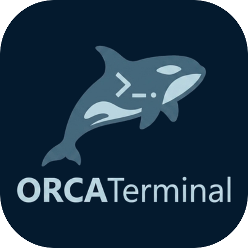
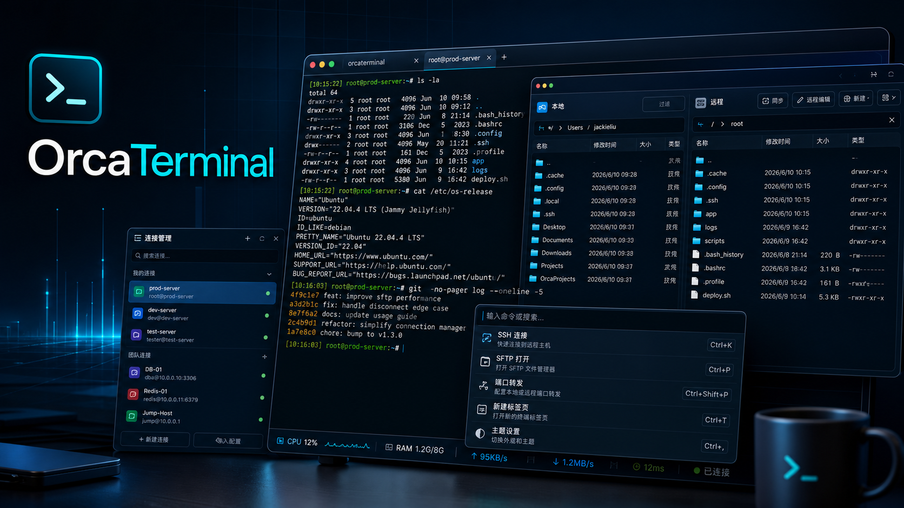

重点变化
新增带签名校验的应用内更新。OrcaTerminal 可以自动或手动检查更新，从公开发布通道下载对应安装包，完成校验、替换安装并重新启动。

OrcaTerminal 立即下载
Current stable
本次发布包含4 项重点变化、8 项体验改进、6 项修复，以下是各部分的主要内容。
新增带签名校验的应用内更新。OrcaTerminal 可以自动或手动检查更新，从公开发布通道下载对应安装包，完成校验、替换安装并重新启动。
重新设计软件更新体验：使用带品牌元素的进度对话框、清晰的中文状态、独立的设置分组，并把 macOS 的检查更新入口放入应用菜单。
取消正在建立的 SSH 连接时立即关闭等待界面，不再因等待后台线程停止而出现短暂卡顿。
Version history
从早期安装包到 SFTP、跳板机、端口转发和串口能力，OrcaTerminal 的每个版本都围绕真实远程工作流往前推进。
otpauth地址的编辑与复制能力。imgcat 命令可以直接在终端里显示本地图片、管道传入的图片数据、从网络下载的图片，以及 WebP 图片。imgcat 文件，会尽量保留原始文件路径；如果图片来自管道、URL、远程 SSH 会话，或者原文件已经不可用，则会自动使用一个本地临时副本。/opt/orcaterminal 的 RPM/DEB 包，以及 Windows NSIS 安装包。